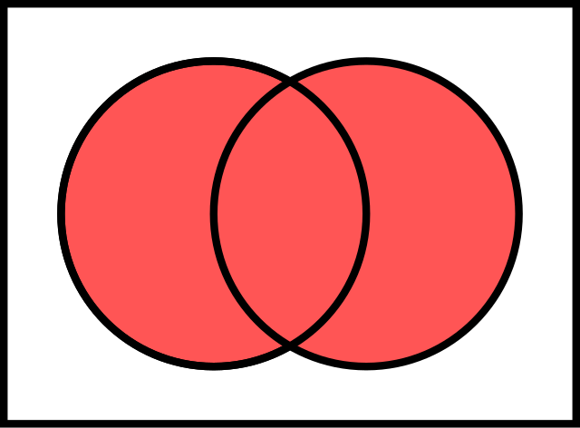
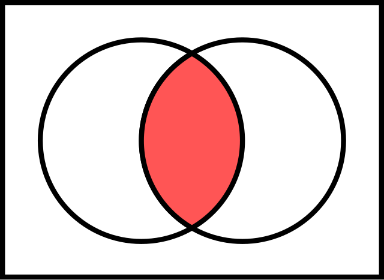
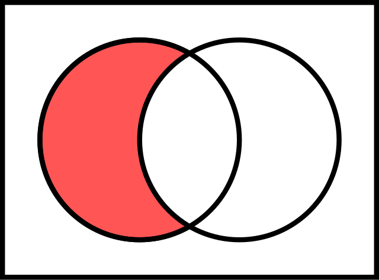

Set theory is a relatively recent branch of mathematics which came about as a result of a program to try to formalize all of mathematics. Many of the notions we have already seen can be formalized in the language of set theory.
A set is just a collection of objects. These objects can be anything, including other sets. We will go over notation and basic set operations later, but for now I thought it’d be interesting to talk about how some of the questions we studied here can be thought of in terms of sets:
Given two sets \(A\) and \(B\), we can look at the set of ordered pairs of elements \((x,y)\), where \(x\) is an object from the set \(A\) and \(y\) is from the set \(B\). One of the problems from last class asks: if \(A\) has 3 objects and \(B\) has 5, what is the size of the set of ordered pairs of objects from these sets?
A function \(f: X \to Y\) can be thought of as a set of ordered pairs with a particular property: for each \(x\) in the domain of the function (\(X\)), there is exactly one \(y\) in the codomain (\(Y\)) such that the ordered pair \((x,y)\) is in (the graph of) the function. Problem 6 asked two types of questions about functions: How many functions are there whose domain is the set containing the numbers 1, 2 and 3, and whose outputs are in the set of 12 different flavors? How many of the above functions are one-to-one functions? (Definition was in 7(e)).
If we think of a function as a special kind of set, this previous question is actually asking about sets of sets: how large is the set of functions which have a certain property?
The Beginnings
By a "set", we mean any collection into a whole, \(M\), of definite and separate objects of our intuition or of our thought. These objects are called the "elements" of \(M\).
--Georg Cantor(1895)Brief History
1800s: formalizing calculus (Cauchy, Bolzano, Weierstrass)
1879 (Cantor): the real numbers are uncountable
1900: Hilbert’s Program: Formalize all of mathematics
1901: Russell’s paradox. “Naive” set theory is contradictory!
1908-1920s: development of axiomatic set theory
1930: Godel’s Incompleteness
1950s: Independence of Continuum Hypothesis
Notations:
A set is an unordered collection of distinct objects.
\(\{1,2,3\}\) is the set of 3 elements: 1, 2, and 3.
\(\{1,2\}=\{2,1\}\): sets are determined by their elements (not ordered tuples)
\(\{1,1,1\}=\{1\}\): sets are determined by their elements (not multisets)
\(\{ x : x\) is a prime number\(\}\): “The set of all \(x\) such that \(x\) is a prime number.”
Ontology: all mathematical objects are sets. Groups, rings, fields, vector spaces, topological spaces, etc.
If \(X\) is a set
\(a \in X\) means “\(a\) is an element of the set \(X\)”
\(a \not \in X\) means “\(a\) is not an element of the set \(X\)”
Example:
\(X = \{\) “red”, “blue”, \(13 \}\). Then \(1 \not \in X\), but “red” \(\in X\).
Common examples
\(\emptyset\): the set containing no elements
\(\mathbb{N} = \{ 0, 1, 2, \ldots \}\): the set of natural numbers
\(\mathbb{Z} = \{ \ldots, -2, -1, 0, 1, 2, \ldots \}\): the set of integers
\(\mathbb{Q} = \{ \frac{m}{n} : m, n \in \mathbb{Z}\) and \(n \neq 0 \}\): the set of rational numbers
\(\mathbb{R}\): the set of real numbers, not that easy to define accurately.
\(\mathbb{C} = \{ a + bi : a, b \in \mathbb{R} \}\): the set of complex numbers
\(\mathbb{N}, \mathbb{Z}, \mathbb{Q}, \mathbb{R}, \mathbb{C}\) are infinite sets. We will usually work with finite sets, but the real power of set theory is the ability to reason, meaningfully, about infinite sets.
Operations
Unions: \(A \cup B = \{ x : x \in A\) or \(x \in B \}\)
Intersections: \(A \cap B = \{ x : x \in A\) and \(x \in B\}\)
Set Difference: \(A \setminus B = \{ x : x \in A\) and \(x \not \in B \}\)
Cartesian Product: \(A \times B = \{ (x, y) : x \in A\) and \(y \in B \}\)
Venn diagram: union

Venn diagram: intersection

Venn diagram: set difference

Exercise: Let \(A = \{ 1, 2, 3, 4, 5 \}\) and \(B = \{ 2, 4, 6, 8, 10 \}\)
Determine the following:
\(A \cap B\)
\(A \cup B\)
\(A \setminus B\)
\(B \setminus A\)
Solutions:
\(A \cap B = \{ 2, 4 \}\)
\(A \cup B = \{ 1, 2, 3, 4, 5, 6, 8, 10 \}\)
\(A \setminus B = \{ 1, 3, 5 \}\)
\(B \setminus A = \{ 6, 8, 10 \}\)
Question: how do the sizes of \(A\), \(B\), \(A \cap B\), \(A \cup B\) all relate?
Subsets
Definition: Let \(A\) be a set. Then \(X \subseteq A\), read “\(X\) is a subset of \(A\)”, or “\(X\) is contained in \(A\)”, means that every element of \(X\) is also an element of \(A\).
\(\mathbb{N} \subseteq \mathbb{Z}\)
\(\{ a, b \} \subseteq \{ a, b, c \}\)
\(\{ a, b, c \} \not \subseteq \{ a, b \}\): \(c\) is a counterexample.
Every set is a subset of itself: \(A \subseteq A\) for every single set \(A\). Why?
Exercise
Let \(A = \{ x \in \mathbb{Z} : x^2 < 9 \}\) and \(B = \{ x \in \mathbb{Z} : x < 3 \}\).
Is \(A \subseteq B\)? Give a proof or find a counterexample.
Is \(B \subseteq A\)? Give a proof or find a counterexample.
Solution
\(A \subseteq B\). \(A\) is a finite set: \(A = \{ -2, -1, 0, 1, 2 \}\). Each one of those is smaller than \(3\), and so each element of \(A\) is also an element of \(B\).
\(B\) is not a subset of \(A\): \(-3 \in B\), since \(-3 < 3\). But \((-3)^2 = 9\), so \(-3 \notin A\).
Empty set
Question: \(\emptyset \subseteq \{ 1, 2, 3 \}\)?\(A \subseteq B\) means “Every element of \(A\) is an element of \(B\).
Is it possible for that to not be true?
“Not every element of \(\emptyset\) is is an element of \(\{ 1, 2, 3 \}\)”? Translation: “there is at least one element of \(\emptyset\) that’s not an element of \(\{ 1, 2, 3 \}\)”. Not true! That means that the statement If \(x \in \emptyset\) then \(x\in \{1,2,3\}\)" is true!
Theorem: For any set \(X\), \(\emptyset \subseteq X\)
Proof strategy:
Let \(A\) and \(B\) be sets.Show that \(B \subseteq A\cup B\). What do we need to prove here? “Every element of \(B\) is in the union of \(A\) and \(B\).” This is of course true, but we can actually write a proof.
Strategy: take an arbitrary element of \(B\), and show that it is either in \(A\) or in \(B\). That would show “Every element of \(B\) is in \(a\cup B\)” is true.
Actual proof:
Let \(x \in B\). WE need to show that \(x\in A\cup B\). That is, we show that “either \(x\in A\) or \(x \in B\)” is a true statement. Assume \(x\not \in A\). Show that \(x\in B\).We already did: the first line said \(x \in B\). Therefore we are done: we have shown that any element of \(B\) is either an element of \(A\) or of \(B\). That is, we have shown that \(B \subseteq A\cup B\).
Exercise:
Let \(A\) and \(B\) be sets. Show that \(A \cap B \subseteq A \cup B\).
Proof:
Let \(x\in A\cap B\). This means that, by definition, \(x \in A\) and \(x \in B\). Since an “or” statement is true if at least one of the disjuncts is true, then since \(x \in A\) is true,the statement that "\(x \in A\) or \(x \in B\)" is true. Therefore \(x \in A \cup B\), since that’s the definition of the union.
Equality of Sets
One way to show that two sets are equal:\(A = B\) means \(A \subseteq B\) and \(B \subseteq A\). Why does this mean the same thing? \(A = B\) means “\(a\) and \(B\) have the same elements.” That is true only when the elements of \(A\) are also elements of \(B\), and vice versa.Example:
Show that \(A = \{ 2n : n \in \mathbb{Z} \}\) and \(B = \{ 2n + 2 : n \in \mathbb{Z} \}\) are equal.
\(A \subseteq B\)
Let \(x \in A\). That means that there is \(n \in \mathbb{Z}\) such that \(x=2n\). We show that there is some \(m \in \mathbb{Z}\) such that \(x = 2m + 2\). Let \(m=n-1\), so that \(2m=2n-2\) Since \(x=2n\), then \(x-2=2n-2\). Adding 2 to both sides of the equation \(x - 2 = 2m\) gives us \(x = 2m + 2\), and so \(x\in B\)\(B \subseteq A\)
Now let \(x \in B\). That means there is \(m \in \mathbb{Z}\) such that \(x=2m+2\). Let \(n=m+1\), and since \(2n=2m+2\), we know that \(x=2n\). This means \(x \in A\).
Since \(A \subseteq B\) and \(B \subseteq A\). his means that the sets \(A\) and \(B\) have the same elements. (Every element of A is an element of B, and vice versa). Therefore they are the same set.
Power Sets
Definition: Let \(A\) be a set. Then \(\mathcal{P}(A) = \{ X : X \subseteq A \}\) is called the power set of \(A\).Example: find all subsets of \(A\).
\(A = \{ 0 \}\)
\(\mathcal{P}(A) = \{ \emptyset, \{ 0 \} \}\)\(A = \{ 0, 1 \}\)
\(\mathcal{P}(A) = \{ \emptyset, \{ 0 \}, \{ 1 \}, \{ 0, 1 \} \}\)